HR Data 원큐 Agent 핸즈온 가이드
개요
목표
사번을 입력하면 HR/평가 데이터를 조회하고, AI를 통해 해당 팀 팀장 포지션의 요구역량과 채점기준에 따라 역량을 분석한 뒤, Word 문서로 사용자 프로필을 생성하는 에이전트를 만듭니다.
완성 구성도
Mock API
- Base URL:
https://mockhrserver.onrender.com - 인사정보 조회:
GET /api/v2/inhr/employees/{id} - 평가/리더십 조회:
GET /api/v2/myhr/evaluations/{id} - Swagger 문서: https://mockhrserver.onrender.com/swagger/v2.json
- 직원 100명, 23개 부서
준비 파일
| 파일명 | 용도 | 비고 |
|---|---|---|
Knowledge_역량항목_채점기준.xlsx | 참조 자료 — 역량항목별 채점 가이드 | 18행 |
Knowledge_포지션별_요구역량.xlsx | 참조 자료 — 팀별 요구역량 | 24행 |
skchem_result_template.docx | Word 템플릿 — 결과 문서 양식 | 25개 필드 |
Step 1. 에이전트 생성
| 항목 | 입력 값 |
|---|---|
| 이름 | HR 에이전트 |
| 설명 | HR Data 기반 구성원 역량 프로필을 생성하고 분석하는 에이전트입니다. |
| 지침 | (비워두기 — Step 3에서 토픽 구성 후 작성) |
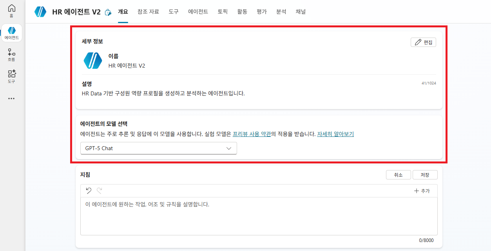
Step 2. 참조 자료(Knowledge) 업로드
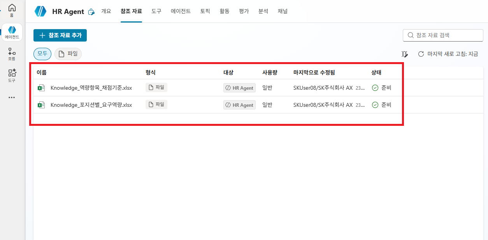
Step 3. 토픽 구성 — 사번 입력
토픽 생성 및 트리거
프로필 생성
에이전트 지침(Step 3)에서 토픽 연결을 정의했으므로, 트리거 설명 없이도 자동으로 라우팅됩니다.
사번 입력받기
분석할 구성원의 사번을 입력해주세요. (예: EMP070)사번으로 변경
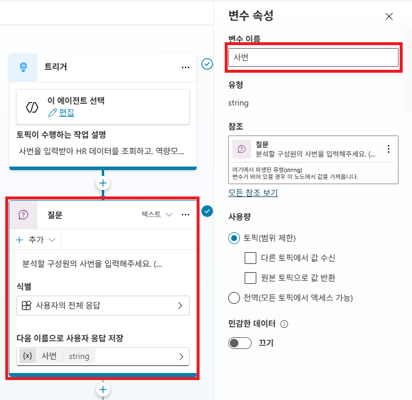
시스템 토픽 — 대화 시작 메시지
"대화 시작"은 Copilot Studio의 시스템 토픽으로, 사용자가 에이전트와 처음 대화를 시작할 때 자동으로 실행됩니다. 이 토픽에 인사 메시지를 추가하면 에이전트가 자기소개와 함께 사용 안내를 먼저 전달할 수 있습니다.
에이전트가 처음 대화 시작 시 사용자에게 보여줄 안내 메시지입니다.
안녕하세요, HR 원큐 에이전트입니다.
구성원의 사번을 입력하시면 인사·평가 데이터를 조회하고,
역량모델 기준에 따라 분석한 뒤 프로필 문서(word)를 생성해 드립니다.에이전트 지침 설정 (토픽 연결)
에이전트의 지침(Instructions)에 역할과 범위를 정의하면, 사용자가 프로필 생성을 요청할 때 자동으로 "프로필 생성" 토픽으로 연결됩니다.
당신은 SK케미칼 HR Data 원큐 Agent입니다.
### 답변 가능
- 구성원의 프로필 생성 요청은 /프로필 생성 토픽으로 연결합니다.
### 답변 불가
- 답변 가능 항목 외 모든 문의는 "해당 문의에는 답변할 수 없습니다." 로 답변합니다./토픽이름 형식으로 작성하면 에이전트가 해당 토픽으로 자동 라우팅합니다.
/프로필 생성이라고 명시하면, 사번 입력 시 별도 토픽 이동 설정 없이 "프로필 생성" 토픽이 자동 실행됩니다.
Step 4. 토픽 구성 — HTTP 요청으로 API 호출
인사정보 API 호출 (HTTP 요청 1)
| 항목 | 값 |
|---|---|
| URL | ... 클릭 → "수식" → "https://mockhrserver.onrender.com/api/v2/inhr/employees/" & Topic.사번 |
| 메서드 | GET |
| 응답 데이터 형식 | "샘플 데이터에서 선택" → "</> 샘플 JSON에서 스키마 가져오기" 클릭 → 아래 JSON 붙여넣기 |
인사정보 샘플 JSON (클릭하여 펼치기)
{
"data": {
"employeeId": "EMP000",
"name": "홍길동",
"birthDate": "1985-05-15",
"department": "전략기획팀",
"position": "부장",
"grade": "SM2",
"tenure": 15,
"promotionDate": "2022-03-01",
"photoUrl": "https://sp.example.com/photos/emp000.jpg",
"managerId": "EMP001",
"lastModified": "2026-04-01T09:00:00Z",
"educationSummary": "서울대학교 경영학 학사 (2008년 졸업) / 연세대학교 MBA 석사 (2012년 졸업)",
"careerSummary": "삼성전자 기획팀 사원 (2008-03-01~2013-02-28) - 신사업 기획 업무 / SK케미칼 전략기획팀 부장 (2013-03-01~재직중) - 중장기 전략 수립",
"overseasSummary": "미국 MBA 파견 (2010-08-01~2012-06-30) / 독일 기술 연수 (2018-06-01~2018-08-31)",
"familySummary": "",
"certificationSummary": ""
}
}인사정보_record로 변경
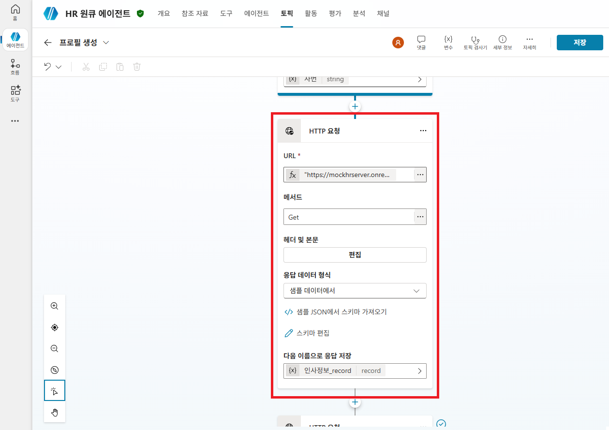
평가/리더십 API 호출 (HTTP 요청 2)
| 항목 | 값 |
|---|---|
| URL | ... 클릭 → "수식" → "https://mockhrserver.onrender.com/api/v2/myhr/evaluations/" & Topic.사번 |
| 메서드 | GET |
| 응답 데이터 형식 | "샘플 데이터에서 선택" → "</> 샘플 JSON에서 스키마 가져오기" 클릭 → 아래 JSON 붙여넣기 |
평가정보 샘플 JSON (클릭하여 펼치기)
{
"data": {
"employeeId": "EMP000",
"lastModified": "2026-04-01T09:00:00Z",
"referenceYears": {"N": 2025, "N1": 2024, "N2": 2023},
"performance_N": "S",
"competency_N": "S",
"supervisorReview_N": "글로벌 진출 전략 성공. (직속상사)",
"supervisorScore_N": "4.7",
"peerScore_N": "4.4",
"subordinateScore_N": "4.0",
"supervisorComment_N": "",
"peerComment_N": "고객 관점 사고 / 업무 위임 부족",
"subordinateComment_N": "체계적 피드백 / 타 부서 소통 적극화",
"performance_N1": "S",
"competency_N1": "A",
"supervisorReview_N1": "신사업 발굴 탁월. (직속상사)",
"supervisorScore_N1": "4.8",
"peerScore_N1": "4.5",
"subordinateScore_N1": "4.4",
"supervisorComment_N1": "",
"peerComment_N1": "이슈 구조화 능력 / 사전 공유 강화",
"subordinateComment_N1": "체계적 성과 관리 / 워라밸 신경",
"performance_N2": "A",
"competency_N2": "A",
"supervisorReview_N2": "주요 프로젝트를 성공적으로 리드함. (직속상사)",
"supervisorScore_N2": "4.5",
"peerScore_N2": "4.3",
"subordinateScore_N2": "4.6",
"supervisorComment_N2": "",
"peerComment_N2": "협업 우수 / 조율 시간 필요",
"subordinateComment_N2": "코칭 적극적 / 권한 명확화 필요"
}
}평가정보_record로 변경
JSON 문자열 변환 (변수 값 설정)
HTTP 요청 결과는 레코드(객체) 타입입니다. 생성형 답변의 프롬프트에 텍스트로 삽입하려면 JSON 문자열로 변환해야 합니다.
인사정보_문자열 (문자열 타입)
JSON(Topic.인사정보_record, JSONFormat.IndentFour)- "변수 설정" → "새 변수 만들기" → 변수명:
평가정보_문자열(문자열 타입) - "받는 사람 값" → 수식:
JSON(Topic.평가정보_record, JSONFormat.IndentFour)
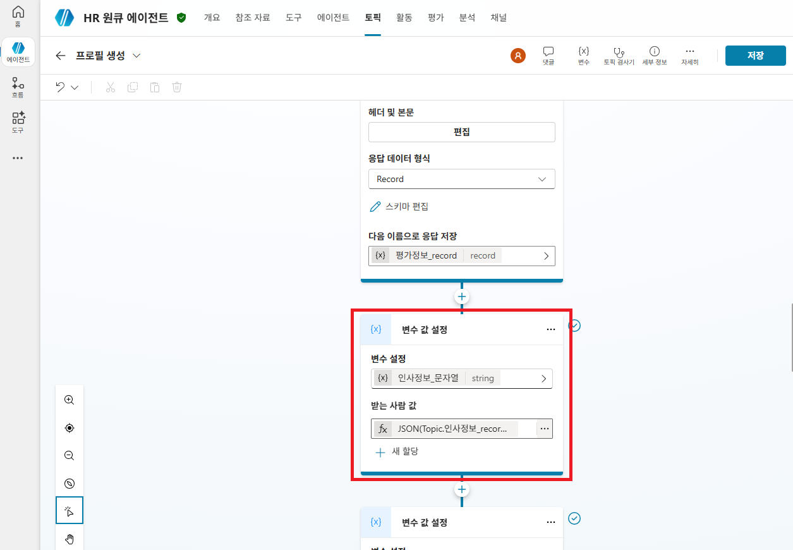
중간 테스트 — API 호출
메시지 입력란에서 "{x}" (변수 삽입) 버튼을 클릭하여 인사정보_문자열, 평가정보_문자열 두 변수를 삽입합니다.
프로필 생성해줘 입력 → 사번 EMP070 입력
Step 5. 토픽 구성 — AI 역량 분석 (생성형 답변)
노드 추가
입력(Input) 설정
... 클릭 → "수식" → 아래 수식 입력:
Topic.인사정보_문자열 & " " & Topic.평가정보_문자열인사정보와 평가정보 JSON 문자열을 하나로 합쳐 AI에게 전달합니다.
참조 자료 연결
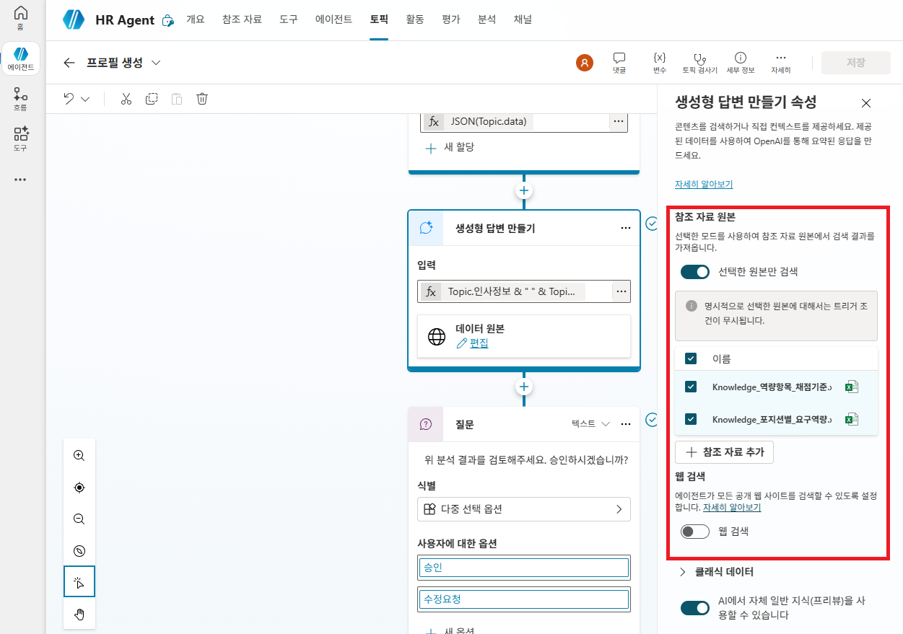
AI 분석 결과를 변수에 저장
응답결과로 변경
이 변수에 AI 분석 결과가 저장되며, Word 문서 생성 시 사용됩니다.
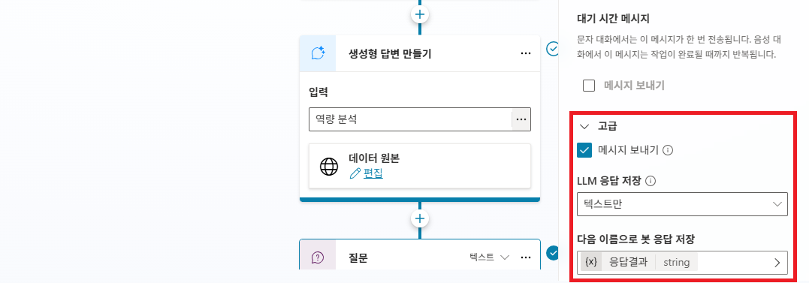
분석 프롬프트 입력 (데이터 변수 삽입 포함)
프롬프트 안에 API 데이터 변수를 직접 삽입하여 AI가 실제 데이터를 참조할 수 있게 합니다.
🔵 {x} Topic.인사정보_문자열과 🔵 {x} Topic.평가정보_문자열 부분은 직접 타이핑하는 것이 아닙니다. 해당 위치에서 {x} 아이콘 클릭 → "사용자 지정" 탭 → 인사정보_문자열 또는 평가정보_문자열 변수를 선택하면 자동으로 삽입됩니다.
당신은 SK케미칼 HR 역량 분석 전문가입니다.
아래 [인사정보]와 [평가정보]는 실제 HR 시스템에서 조회한 데이터입니다.
[인사정보]
🔵 여기서 {x} 클릭 → Topic.인사정보_문자열 선택
[평가정보]
🔵 여기서 {x} 클릭 → Topic.평가정보_문자열 선택
## 분석 절차 (반드시 순서대로 수행)
1단계: 인사정보에서 소속팀과 직급을 확인하세요.
2단계: 참조자료 "Knowledge_포지션별_요구역량.xlsx"에서 해당 소속팀의 행을 찾아 아래 3가지를 확인하세요.
- 핵심직무
- 요구전문성
- 리더십기대사항
3단계: 참조자료 "Knowledge_역량항목_채점기준.xlsx"에서 해당 "CHEM_LEADER" 코드의 평가항목 3개와 채점 가이드라인을 확인하세요.
4단계: 2단계의 요구역량 + 3단계의 채점기준을 적용하여, 실제 평가 데이터를 분석하세요.
## 절대 규칙
- 실제 등급, 점수, 코멘트를 반드시 직접 인용하세요.
- 채점 기준 문장을 그대로 나열하지 말고, 기준에 따른 분석 결과만 서술하세요.
## 출력 형식
⚠️ 아래 구분자는 시스템 파싱용입니다. 형태를 절대 변경하지 마세요.
###SEC0_적용기준###
소속/직급: (인사정보에서 확인한 소속팀, 직급)
역량모델 유형: CHEM_LEADER
핵심직무: (참조자료에서 찾은 내용)
요구전문성: (참조자료에서 찾은 내용)
리더십기대사항: (참조자료에서 찾은 내용)
평가항목: (참조자료에서 찾은 3개 항목명과 채점 가이드라인의 상세내용)
###SEC1_주요역량###
직무 전문성 분석 3~5문장 (위 기준 대비 실제 역량 평가, 등급/코멘트 인용)
###SEC2_상위역할###
상위 역할 준비도 3~5문장 (리더십 서베이 실제 점수/코멘트 인용)
###SEC3_종합의견###
3개년 등급 추이 명시 후 최종 판정: 적합 / 조건부 적합 / 부적합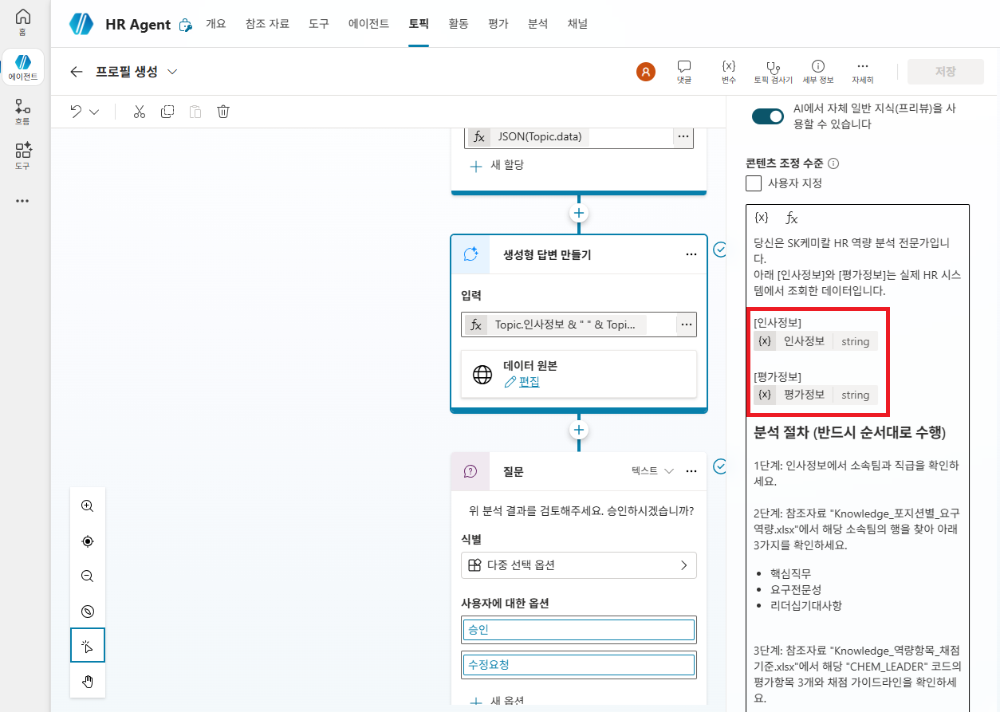
중간 테스트 — AI 분석 결과
프로필 생성해줘 → 사번 EMP070
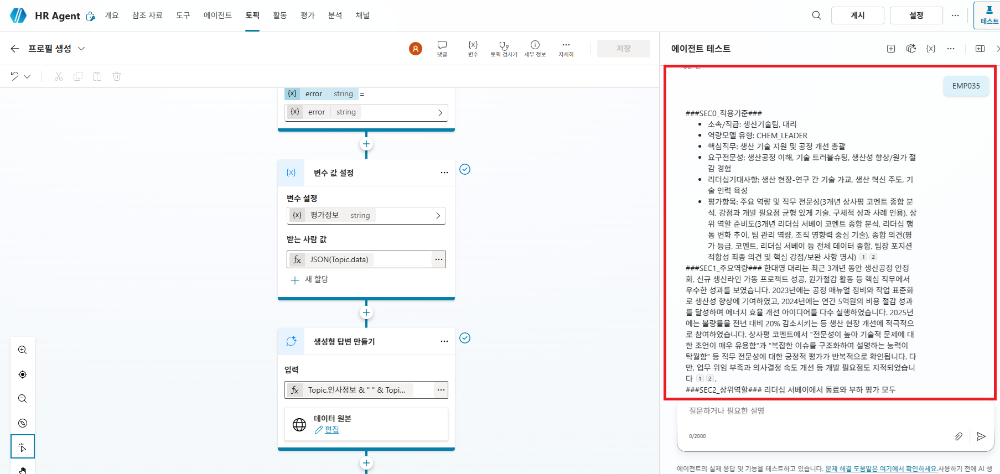
Step 6. 토픽 구성 — HITL 승인 검토
승인 질문 추가
위 분석 결과를 검토해주세요. 승인하시겠습니까?(맨 위의 "미리 빌드, 문자열" 항목)
승인수정 요청
승인여부로 변경
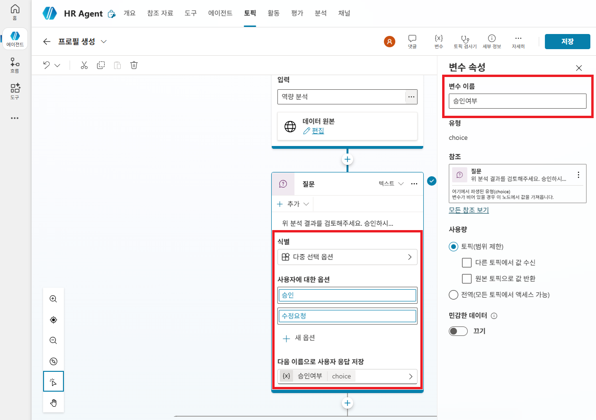
조건 분기 설정
선택지를 추가하면 자동으로 조건 분기가 생성됩니다.
승인 경로 (왼쪽)
분석이 승인되었습니다. 결과 프로필이 확정되었습니다.
분석 결과를 기반으로 프로필 문서를 생성합니다.수정 요청 경로 (가운데)
수정 요청을 접수했습니다. 추가 의견을 반영하여 다시 분석하겠습니다.중간 테스트 — HITL 승인
프로필 생성해줘 → 사번 EMP070
Step 7. Word 템플릿 준비
템플릿을 비즈니스용 OneDrive에 업로드
(개인용 OneDrive가 아닌 회사 계정용)
skchem_result_template.docx 업로드
이 문서는 Word의 "콘텐츠 컨트롤" 기능을 활용하여, 에이전트 흐름이 정해진 위치에 데이터를 자동으로 채워 넣을 수 있도록 미리 세팅해 둔 양식입니다.
매핑 필드 (25개)
템플릿에 포함된 25개 콘텐츠 컨트롤 필드와 매핑 데이터입니다.
| # | 템플릿 필드명 | 매핑 데이터 | 출처 |
|---|---|---|---|
| 1 | 성명_생년월 | 이름 + 생년월일 | 인사정보 |
| 2 | 소속 | 부서 | 인사정보 |
| 3 | 직책_연차 | 직책 + 근속연수 | 인사정보 |
| 4 | 학력 | 학력 전체 | 인사정보 |
| 5 | 주요경력 | 경력 전체 | 인사정보 |
| 6 | 업적23 | 2023 업적등급 | 평가정보 |
| 7 | 업적24 | 2024 업적등급 | 평가정보 |
| 8 | 업적25 | 2025 업적등급 | 평가정보 |
| 9 | 역량23 | 2023 역량등급 | 평가정보 |
| 10 | 역량24 | 2024 역량등급 | 평가정보 |
| 11 | 역량25 | 2025 역량등급 | 평가정보 |
| 12 | 코멘트23 | 2023 상사평 코멘트 | 평가정보 |
| 13 | 코멘트24 | 2024 상사평 코멘트 | 평가정보 |
| 14 | 코멘트25 | 2025 상사평 코멘트 | 평가정보 |
| 15 | 동료23 | 2023 동료 리더십 점수 | 평가정보 |
| 16 | 동료24 | 2024 동료 리더십 점수 | 평가정보 |
| 17 | 동료25 | 2025 동료 리더십 점수 | 평가정보 |
| 18 | 동료코멘트 | 동료 리더십 코멘트 종합 | 평가정보 |
| 19 | 부하23 | 2023 부하 리더십 점수 | 평가정보 |
| 20 | 부하24 | 2024 부하 리더십 점수 | 평가정보 |
| 21 | 부하25 | 2025 부하 리더십 점수 | 평가정보 |
| 22 | 부하코멘트 | 부하 리더십 코멘트 종합 | 평가정보 |
| 23 | 주요역량_직무전문성 | AI 분석 결과 | 분석결과 |
| 24 | 상위역할_준비도 | AI 분석 결과 | 분석결과 |
| 25 | 종합의견 | AI 분석 결과 | 분석결과 |
Step 8. 에이전트 흐름 생성
이 흐름은 다음 작업을 수행합니다.
흐름 생성 및 트리거 입력 설정
| 입력 이름 | 타입 | 용도 |
|---|---|---|
인사정보 | 텍스트 | 인사 API 응답 (JSON) |
평가정보 | 텍스트 | 평가 API 응답 (JSON) |
분석결과 | 텍스트 | AI 분석 결과 텍스트 |
HR 프로필 워드 생성으로 변경

① JSON 구문 분석 및 분석결과 분리
인사정보 JSON 스키마 (클릭하여 펼치기)
{
"type": "object",
"properties": {
"data": {
"type": "object",
"properties": {
"employeeId": {
"type": "string"
},
"name": {
"type": "string"
},
"birthDate": {
"type": "string"
},
"department": {
"type": "string"
},
"position": {
"type": "string"
},
"grade": {
"type": "string"
},
"tenure": {
"type": "integer"
},
"promotionDate": {
"type": "string"
},
"photoUrl": {
"type": "string"
},
"managerId": {
"type": "string"
},
"lastModified": {
"type": "string"
},
"educationSummary": {
"type": "string"
},
"careerSummary": {
"type": "string"
},
"overseasSummary": {
"type": "string"
},
"familySummary": {
"type": "string"
},
"certificationSummary": {
"type": "string"
}
}
}
}
}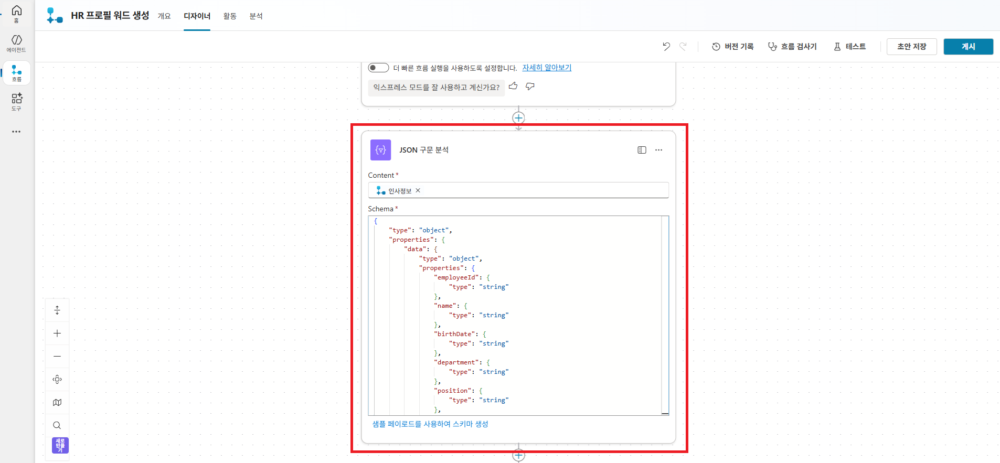
평가정보 JSON 스키마 (클릭하여 펼치기)
{
"type": "object",
"properties": {
"data": {
"type": "object",
"properties": {
"employeeId": {
"type": "string"
},
"lastModified": {
"type": "string"
},
"referenceYears": {
"type": "object",
"properties": {
"N": { "type": "integer" },
"N1": { "type": "integer" },
"N2": { "type": "integer" }
}
},
"performance_N": { "type": "string" },
"competency_N": { "type": "string" },
"supervisorReview_N": { "type": "string" },
"supervisorScore_N": { "type": "string" },
"peerScore_N": { "type": "string" },
"subordinateScore_N": { "type": "string" },
"supervisorComment_N": { "type": "string" },
"peerComment_N": { "type": "string" },
"subordinateComment_N": { "type": "string" },
"performance_N1": { "type": "string" },
"competency_N1": { "type": "string" },
"supervisorReview_N1": { "type": "string" },
"supervisorScore_N1": { "type": "string" },
"peerScore_N1": { "type": "string" },
"subordinateScore_N1": { "type": "string" },
"supervisorComment_N1": { "type": "string" },
"peerComment_N1": { "type": "string" },
"subordinateComment_N1": { "type": "string" },
"performance_N2": { "type": "string" },
"competency_N2": { "type": "string" },
"supervisorReview_N2": { "type": "string" },
"supervisorScore_N2": { "type": "string" },
"peerScore_N2": { "type": "string" },
"subordinateScore_N2": { "type": "string" },
"supervisorComment_N2": { "type": "string" },
"peerComment_N2": { "type": "string" },
"subordinateComment_N2": { "type": "string" }
}
}
}
}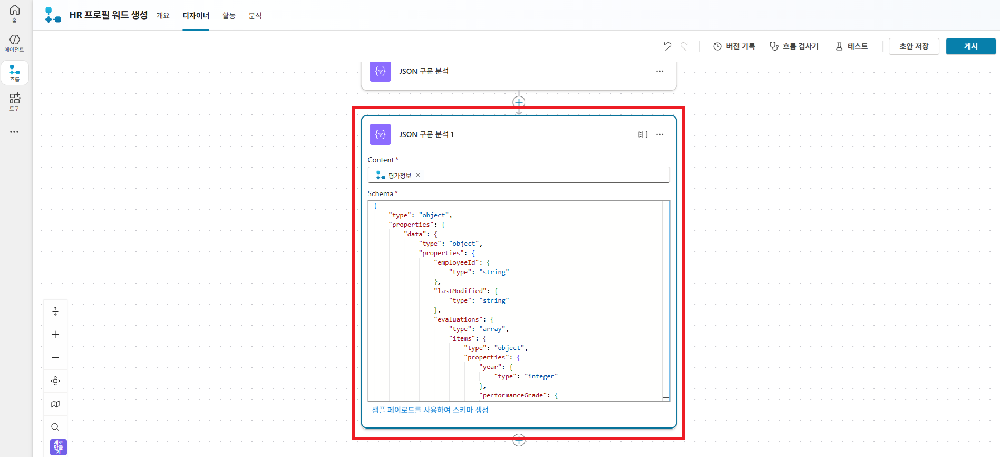
AI 분석결과 중 ###SEC1_주요역량###, ###SEC2_상위역할###, ###SEC3_종합의견### 영역을 3개 변수로 분리합니다.
에이전트 흐름으로 전달되는 샘플 분석결과 (클릭하여 펼치기)
###SEC0_적용기준###
소속/직급: A팀, 차장
역량모델 유형: CHEM_LEADER
핵심직무: 소재 개발·공정 최적화
요구전문성: 고분자/촉매 전문지식, 데이터 분석
리더십기대사항: 팀 성과 관리, 크로스펑셔널 협업
평가항목: 전략적사고(조직 목표 연계 판단력), 성과관리(목표 설정·피드백), 인재육성(코칭·위임)
###SEC1_주요역량###
이나영 차장은 2023년 업적등급 B+, 역량등급 B+, 2024년 업적등급 S, 역량등급 B+, 2025년 업적등급 S, 역량등급 B+를 기록하였습니다. 상사평에 따르면 "신규 촉매 개발 프로젝트에서 핵심적 역할을 수행하며 특허 출원에 기여함. 실험 설계 능력이 뛰어나며 데이터 분석 역량이 우수함"이라는 평가를 받았으며, "고분자 소재 개발에서 고객 요구사항을 정확히 파악하여 맞춤형 솔루션을 제시함. 기술 트렌드에 대한 감각이 우수함"이라는 코멘트도 반복적으로 확인됩니다. 직무 전문성 측면에서 소재 개발, 공정 최적화, 데이터 분석 등 R&D 분야에서 탁월한 성과와 전문성을 보여주고 있습니다.
###SEC2_상위역할###
리더십 서베이 점수는 2023년 3.7~4.8, 2024년 4.4~4.8, 2025년 4.0~4.4로 꾸준히 높은 수준을 유지하고 있습니다. 강점 코멘트로는 "고객 관점에서 사고하며, 비즈니스 성과와 팀원 케어의 균형을 잘 맞춤", "성과 관리에 체계적이며, 팀원 개개인의 성장을 위한 피드백을 자주 제공함", "크로스펑셔널 협업에 적극적이며, 타 부서와의 갈등을 원만하게 조정함" 등이 있습니다. 다만, "업무 위임이 부족하여 본인에게 업무가 집중되는 경향", "의사결정이 다소 느린 편", "본인의 의견을 너무 강하게 주장하는 경향" 등 개선 필요점도 지적되었습니다. 전반적으로 팀 관리 역량과 조직 영향력은 우수하나, 위임과 의사결정 속도, 커뮤니케이션 측면에서 보완이 필요합니다.
###SEC3_종합의견###
3개년 업적등급 및 역량등급 추이는 B+ → S → S, B+ → B+ → B+로 안정적으로 상위권을 유지하고 있습니다. 상사평과 리더십 서베이 코멘트에서 직무 전문성과 리더십 강점이 반복적으로 확인되며, 팀장급 리더 역할 수행에 적합하다고 판단됩니다. 다만, 위임 및 커뮤니케이션 개선이 필요하므로 최종 판정은 "적합"으로 제시합니다."+ 새 단계" → "변수 초기화" 3개 추가. 각각 값에 수식을 식(fx) 탭에서 입력:
| 변수명 | 형식 | 값 (수식) |
|---|---|---|
주요역량 |
문자열 | split(split(triggerBody()?['text_2'],'###SEC2_상위역할###')[0],'###SEC1_주요역량###')[1] |
상위역할 |
문자열 | split(split(triggerBody()?['text_2'],'###SEC3_종합의견###')[0],'###SEC2_상위역할###')[1] |
종합의견 |
문자열 | split(triggerBody()?['text_2'],'###SEC3_종합의견###')[1] |
triggerBody()?['text_2']는 트리거 입력 중 "분석결과" 텍스트입니다.
split() 함수로 구분자(###SEC1_주요역량### 등)를 기준으로 텍스트를 잘라내어 각 영역만 추출합니다.
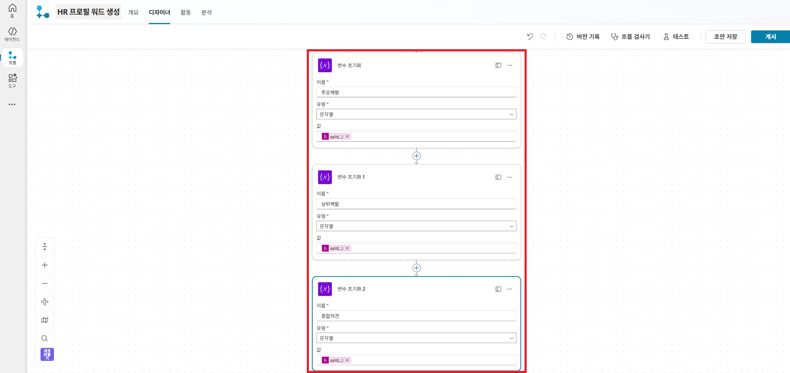
② Word 문서 생성
Word 템플릿에 25개 필드를 매핑하여 문서를 생성합니다. v2 API는 데이터가 이미 전처리되어 있으므로 JSON 구문 분석 결과를 바로 매핑할 수 있습니다.
/HR_프로필/케미칼용_결과양식_template.docx
파일 선택 후 "고급 매개 변수" → "모두 보기"를 클릭하면 25개 콘텐츠 컨트롤 필드가 표시됩니다. 각 필드에 아래 값을 매핑합니다.
25개 필드 매핑 표
body('JSON_구문_분석')?['data']?['필드명'], 평가정보 필드는 body('JSON_구문_분석_1')?['data']?['필드명']으로 참조합니다.연도 접미사:
_N2 = 3년 전, _N1 = 2년 전, _N = 최근년도 (예: 2023, 2024, 2025)
| # | 필드 | 매핑 값 (수식 또는 데이터 선택) |
|---|---|---|
| 1 | 성명_생년월 | 수식: concat(body('JSON_구문_분석')?['data']?['name'], ' (', body('JSON_구문_분석')?['data']?['birthDate'], ')') |
| 2 | 소속 | 데이터 선택: JSON 구문 분석 → data → department |
| 3 | 직책_연차 | 수식: concat(body('JSON_구문_분석')?['data']?['position'], ' / ', body('JSON_구문_분석')?['data']?['tenure'], '년') |
| 4 | 학력 | 데이터 선택: JSON 구문 분석 → data → educationSummary |
| 5 | 주요경력 | 데이터 선택: JSON 구문 분석 → data → careerSummary |
| 6 | 업적23 | 데이터 선택: JSON 구문 분석 1 → data → performance_N2 |
| 7 | 업적24 | 데이터 선택: JSON 구문 분석 1 → data → performance_N1 |
| 8 | 업적25 | 데이터 선택: JSON 구문 분석 1 → data → performance_N |
| 9 | 역량23 | 데이터 선택: JSON 구문 분석 1 → data → competency_N2 |
| 10 | 역량24 | 데이터 선택: JSON 구문 분석 1 → data → competency_N1 |
| 11 | 역량25 | 데이터 선택: JSON 구문 분석 1 → data → competency_N |
| 12 | 코멘트23 | 데이터 선택: JSON 구문 분석 1 → data → supervisorReview_N2 |
| 13 | 코멘트24 | 데이터 선택: JSON 구문 분석 1 → data → supervisorReview_N1 |
| 14 | 코멘트25 | 데이터 선택: JSON 구문 분석 1 → data → supervisorReview_N |
| 15 | 동료23 | 데이터 선택: JSON 구문 분석 1 → data → peerScore_N2 |
| 16 | 동료24 | 데이터 선택: JSON 구문 분석 1 → data → peerScore_N1 |
| 17 | 동료25 | 데이터 선택: JSON 구문 분석 1 → data → peerScore_N |
| 18 | 동료코멘트 | 데이터 선택: JSON 구문 분석 1 → data → peerComment_N |
| 19 | 부하23 | 데이터 선택: JSON 구문 분석 1 → data → subordinateScore_N2 |
| 20 | 부하24 | 데이터 선택: JSON 구문 분석 1 → data → subordinateScore_N1 |
| 21 | 부하25 | 데이터 선택: JSON 구문 분석 1 → data → subordinateScore_N |
| 22 | 부하코멘트 | 데이터 선택: JSON 구문 분석 1 → data → subordinateComment_N |
| 23 | 주요역량_직무전문성 | 데이터 선택: 변수 → 주요역량 |
| 24 | 상위역할_준비도 | 데이터 선택: 변수 → 상위역할 |
| 25 | 종합의견 | 데이터 선택: 변수 → 종합의견 |
③ OneDrive에 저장
| 항목 | 값 |
|---|---|
| 폴더 경로 | /HR_프로필 |
| 파일 이름 | 수식: concat('hrprofile_', body('JSON_구문_분석')?['data']?['name'], '_', formatDateTime(utcNow(),'yyyyMMddHHmmss'), '.docx') |
| 파일 콘텐츠 | Word 템플릿의 "Microsoft Word 문서" 출력 |
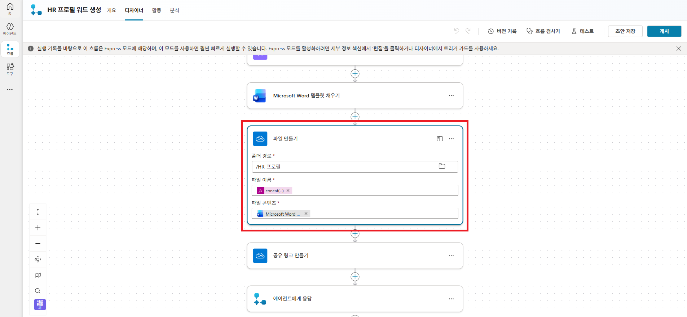
④ 공유 링크 생성 및 에이전트에게 반환
생성된 파일의 공유 링크를 만들어 에이전트 사용자가 바로 열 수 있도록 합니다.
| 항목 | 값 |
|---|---|
| 파일 ID | 데이터 선택: 파일 만들기 → "ID" |
| 링크 유형 | "View" |
| 링크 범위 | "Organization" |

에이전트에게 응답
| 항목 | 값 |
|---|---|
| 출력 이름 | 파일링크 |
| 타입 | 텍스트 (반드시 텍스트로 설정) |
| 값 | 데이터 선택: 공유 링크 만들기 → "웹 URL" |
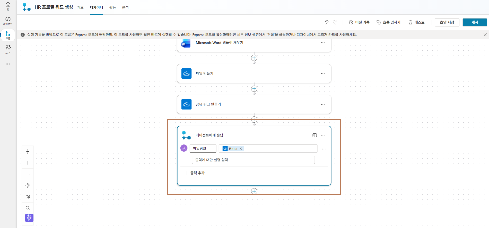
Step 9. 흐름 연결 및 최종 테스트
프로필 생성 토픽에 흐름 연결
| 흐름 입력 | 매핑 값 |
|---|---|
| 인사정보 (텍스트) | 변수 선택 → Topic.인사정보_문자열 |
| 평가정보 (텍스트 1) | 변수 선택 → Topic.평가정보_문자열 |
| 분석결과 (텍스트 2) | 변수 선택 → Topic.응답결과 |

프로필 문서가 생성되었습니다. 아래 링크에서 확인하세요:
{x} 파일링크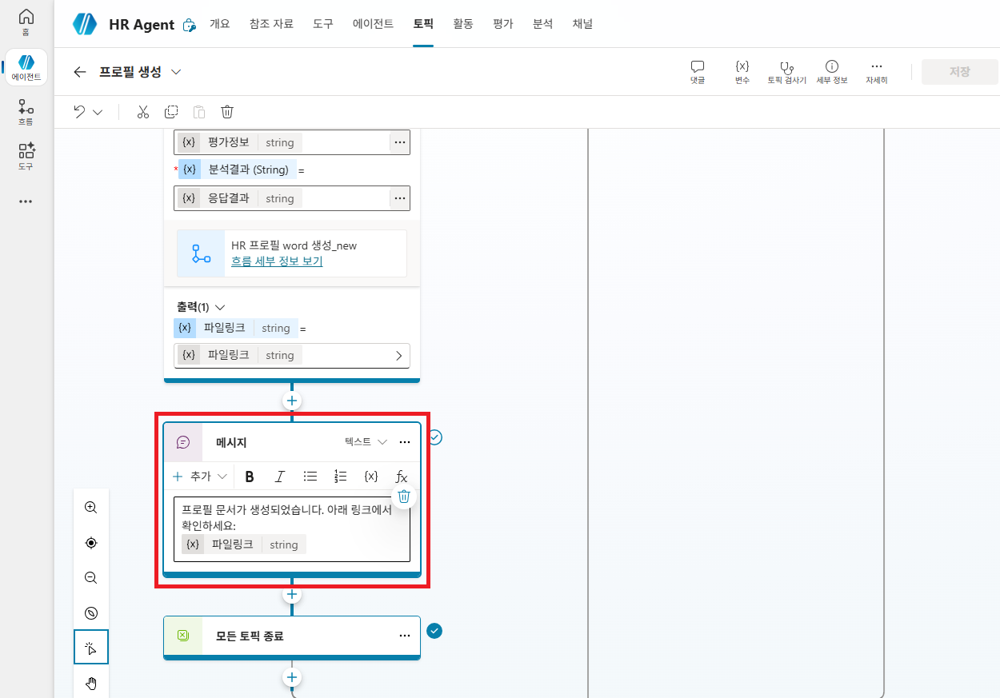
완성된 토픽 흐름
💬 대화 시작 ← 인사 메시지 출력 후 "프로필 생성" 토픽으로 이동
↓
❓ 사번 질문 ← 사용자 응답 → Topic.사번 변수에 저장
↓
🔌 inHR API 호출 ← 기본정보, 가족, 해외경험, 자격증
↓
🔌 myHR API 호출 ← 3개년 평가등급, 리더십 서베이
↓
🤖 생성형 답변 ← 참조 자료 + API 데이터 → 역량 프로필 작성 → 응답결과 변수 저장
↓
👤 HITL 승인 요청 ← 승인 / 수정 요청 선택
↓
📄 에이전트 흐름 ← (승인 시) Word 템플릿 채우기 → OneDrive 저장 → 공유 링크 생성
↓
✅ 완료 ← 생성된 Word 파일 링크 전달최종 테스트
EMP070 입력
/HR_프로필/ 폴더에 결과 파일 생성 확인
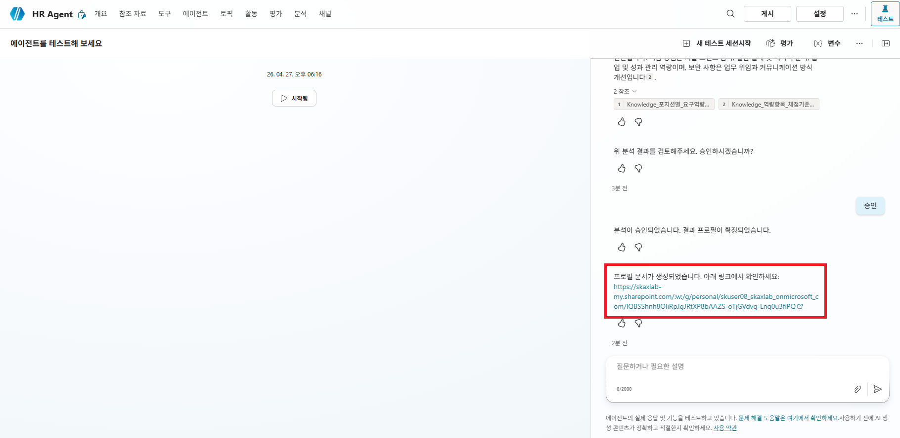
참고
파일 업로드 차단 시 조치법
회사 보안 정책으로 파일 업로드가 차단된 경우, 흐름을 사용하여 OneDrive에 파일을 가져올 수 있습니다.
- Copilot Studio → 좌측 흐름 메뉴 > + 새 에이전트 흐름
- 트리거 추가 — 수동으로 흐름 트리거
- 작업 추가 — URL에서 파일 업로드 (총 3개 작업 추가)
- 원본 URL:
https://dbswhdgk931-prog.github.io/files/skchem_result_template.docx
대상 파일 경로:/HR_프로필/skchem_result_template.docx - 원본 URL:
https://dbswhdgk931-prog.github.io/files/Knowledge_역량항목_채점기준.xlsx
대상 파일 경로:/HR_프로필/Knowledge_역량항목_채점기준.xlsx - 원본 URL:
https://dbswhdgk931-prog.github.io/files/Knowledge_포지션별_요구역량.xlsx
대상 파일 경로:/HR_프로필/Knowledge_포지션별_요구역량.xlsx
- 원본 URL:
- 우측 상단 게시 클릭
- 테스트 클릭 > 수동 선택 > 테스트 클릭
- 좌측 상단 앱 시작 관리자(⋮⋮⋮) > OneDrive 클릭 >
HR_프로필경로에 3개 파일이 정상 생성되었는지 확인